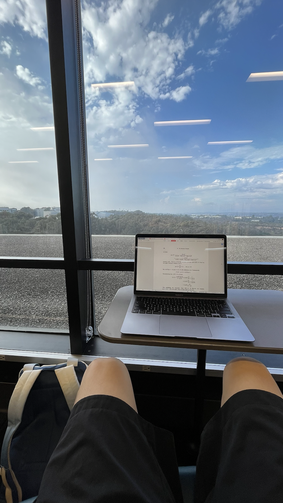
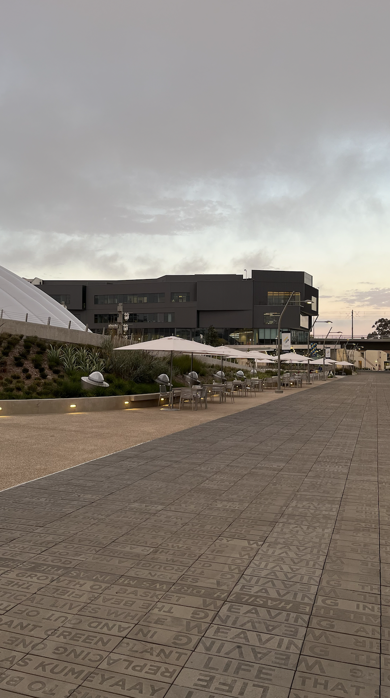

回家前
飞机和住宿不贵，但在LA叫uber应该会花很多钱，预算100刀。在SD时间会比较充裕，多走走路。
Los Angeles
行：Aug 12，OAK-LA，$35.4（2人）
玩：Griffith Observatory，小东京，Getty Center，LACMA，UCLA，Getty Villa，Santa Monica，Venice Beach
环球影城无聊，不去。8.12早上到，先逛再入住。逛小东京，吃饭。下午逛LACMA。约5点，去天文台看日落（徒步/巴士）。8.13去UCLA，Getty center，Getty villa(optional)。下午去Santa Monica海滩和Venice Beach。8.14退房。
LACMA预约，大学生门票$21
Griffith门票免费，不用预约，官网。7:30~8pm日落
[Griffith_Park_Map.pdf][2]
Getty center和Getty villa免费但要预约
San Diego
行：坐火车到Santa Fe Depot，购票人均$36，约三小时。是中午12:10的那班，再早只有7点的了就太早。
住：John&Don，8.14-17（3晚），$378
玩：Gaslamp Quarter，Balboa Park，老城，La Jolla Cove，Geisel library，Midway Museum，UCSD
市中心的煤气灯街区看起来有点意思。老城是拉美风格。Balboa是欧式建筑，不用门票，看风景。海洋世界很有名，但门票太贵不划算。La Jolla能看到一堆海豹。
从 La Jolla Cove 向西走10分钟，有个叫 Children's Pool 的小海湾，这里的海豹特别多
观鲸出海，要预约，65刀。系统一直无法支付，就算了。Geisel图书馆是地标建筑，旁边的UCSD也顺便看一下。中途岛航母必看（不知道为什么必看），门票31刀，要预订。（后来支付失败了，白嫖一张门票）

回程
8.17回，下午2:20pm，机票$63.8（2人）。
Budget
Trip：(35.4+72+63.8)/2=85.6
Live：(246+378)/2=312
T&L: 86+312=$398
Ticket：21
出发
8.12
在奥克兰机场睡了一晚，本以为会很乱很危险，但因为机场在岛上远离市中心，环境还是很好的。做廉价spirit航班，体验比想象中好，至少没坠机且途中能让我睡着。到洛杉矶的时候还很早，先去了离机场很近的Santa Monica海滩，和Venice Beach，有点阴天，但海很开阔且人相对少，比大梅沙好多了。很多人在冲浪，充满活力，蛮喜欢的。

下午跟xlx去ucla闲逛，但他什么话也不说就一个劲的走，挺无语的，主要是我很累，就分头行动了。去了LACMA，司机说相对于艺术，它主要讲的是洛杉矶历史，诚哉斯言。花了$21门票，觉得东西有点少，还有有一部分在建。不过也有些喜欢的作品，毕加索不少画都在这边

| A | B |
|---|---|
 |
 |
晚上本来想去Griffith看日落，但等公交浪费太久时间，来不及了，只好明天再看。但我想着出都出来了，索性去别处逛逛，就坐metro去小东京。地铁又脏又臭，大麻和汗水味纠缠在一起，让人作呕。下车后走了一段，沿途很多homeless，路上也脏的不行，一度很崩溃。当终于看到日文招牌时真的感觉像回到家一样。

我八月刚开始就一直homesick，想着国内的各种好。但这一刻我发觉，这是另一种形式的culture shock，只不过我一直没表现出来，自己也不知道。中日文化相近，同根同源，文化的亲和让我有种回家的感觉，国籍并不是边界，文化认同才是。随便找了个餐馆随便点了份おやこどん，非常幸福。

8.13
起个大早去Getty Center，等公交花了好长时间，结果到的很晚。我下车后徒步过去，走到一半没路了，看到Getty内部人员的通道，就去问我该怎样走进去。结果那人说：你在这坐会，待会有人来接你；就把我载上去了，直接到艺术馆。emm有点无语但很感激～
Getty里面超大，展品很密集，而每一幅都是能在画前欣赏很久的。我很喜欢painting，尤其19世纪以后的，但不喜欢sculpture。看画展有种读故事的感觉，读作者，读ta画的内容和现实背景，因此每幅画有至少三篇故事可读，非常有意思。看到了莫奈的日出印象和梵高的鸢尾花，后者实在是太popular了以致画前堆了两三圈人。逛了4小时，拍了很多照片。我打算回国后仔细研究下感兴趣的这些画，整理一下。
晚上和atsushi在Griffith天文台见面，背着落日拍了张合照，这么短的时间里结识到这样的朋友有点感动。日本人很客气，相处起来很舒服。下山路上我们什么都聊，怪有意思的。去了uber司机大哥推荐的sushistop，还真不错，价格也不算贵。在地铁站和atsushi拥抱告别，下次见面不知道是几年后。他目送我坐上地铁，在我离开他视线时再次挥手，我也在挥手，然后地铁把我越拉越远，很从容很美妙的告别。
8.14 出发去San Diego。刚一来就喜欢上这个城市：街道比LA干净，流浪汉没见到几个，周边有工地和高楼大厦——感觉回国了。对美国的最高评价便是如此。整顿完后已经有点晚，5pm的样子，我决定去Coronado岛上看一看，正好那边有小红书推荐的餐厅，Lobster West，吃龙虾卷。沿路一直被amaze，干净准时的公交，well-designed的公交线路，大桥上的俯瞰海景，都太可爱。岛上全是别墅，典型白人富人区，以后来这边买套房养老。xlx说这里的感觉和Florida一模一样。我们就朝着餐厅的大致方向随便乱走，至于哪个block右拐过马路无所谓，在这边走路本身就是享受。
龙虾卷超好吃，底下面包烤的很香，龙虾也是超多超新鲜。必须要在这边买房了，这样天天能吃到。

8.15
中途岛号没什么好看的，都是些老旧的飞机，我也不是军迷。甲板上海风超大，对面港口停着三艘现役的航母：CVN70,CVN71,CVN72，分别是文森号、罗斯福号和林肯号。

手机没电了，于是去UCSD找了个地方充。我问了个学生student
union在哪，他不知道，我说没关系。结果往前走了几分钟他从后面追上来，给我介绍一些student
union替代品，比如price center、geisel library啊，好热情哦。去price
center充了会电，又去geisel学了一两个小时。图书馆超大，8层楼，除了顶层是学习区，其他楼层都有满满的书，48排书架，第四层甚至全都是关于
East Asia 的书。
| 1 | 2 |
|---|---|
|  |  |
讲真，如果是让我从ucb和ucsd里选，我会选uscd。
晚上逛了逛煤气灯街区，灯红酒绿，美女很多，主题词
声色犬马。全都是很嗨的bar，但我只想找个地方吃晚饭。小姐姐服务很周到，小费是自动按5%算的，我本来还以为会让我在机子上选15%,20%,25%，预估$60的餐实际上只有$51，surplus也赚麻了，不错。

Reference: https://www.meilvtong.com/viewthread.php?tid=24 https://www.meilvtong.com/viewthread.php?tid=11 https://www.guruin.com/articles/855